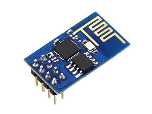

MeshWeather
Stazioni Meteo Distribuite per il monitoraggio dei campi

Hardware
Abbiamo fatto ciò che non dovevamo fare...
... scegliere prima l'hardware e poi capire come usarlo
- ESP-01, tanti, tantissimi...
 - Arduino e relativi sensori
Circuito per gestire gli ESP-01
-
Per il bootloading abbiamo usato il circuito
ESP01-developer-board - Per l'utilizzo nella rete abbiamo realizzato un circuito per la regolazione della tensione, scaricabile qui
Software
(La parte divertente)
Cosa abbiamo fatto...
- Passo 1: flashare il tutto (maggiori dettagli...)
-
Passo 2: trovare una libreria per la gestione della Mesh Network
- Arduino ESP8266-WiFi
- Su cui è costruita la libreria che usiamo, easyMesh
- Passo 3: Creare la nostra rete mesh (codice su GitHub)
Protocolli di comunicazione
3 modalità di comunicazione
- Seriale - Arduino, ESP-01
Collegamento seriale puro, dove vengono mandati dei pacchetti JSON contenente i dati raccolti.
- Wifi - ESP-01, ESP-01
Rete Mesh ad hoc simulata tramite una serie di connessioni punto-punto.
- Wifi/Seriale - ESP-01, Server
Collegamento seriale (o alternativamente Wifi) che raccoglie tutti i pacchetti della rete e li manda al server che li elaborerà
Collegamento Seriale-Arduino
- Poca affidabilità
- Tensioni diverse (5V VS 3.3V)
Protocollo della rete mesh
Directed DiffusionDiscovery
Parte dal server, è una richiesta di interesse. Viene usata per indirizzare la rotta.Alternativamente si potrebbe usare l'RSS. Si è testato ma per le distanze usate era tutto molto variabile e poco affidabile con il rischio di creare una rete piatta.
Protocollo della rete mesh
Directed DiffusionFowarding
Ogni volta che un nodo riceve un pacchetto lo inoltro al nodo successivo. Se non esiste lo mando in broadcast. Ogni nodo tiene traccia degli ultimi 30 pacchetti inoltrati così da evitare un floading inutile della rete.Non è stata volontariamente gestita la pardita di pacchetti poichè i dati raccolti differiscono poco dai precedenti e quindi non è necessario un campionamento eccessivo. Inoltre una nuova richiesta di interesse del sink provvederà, qualora sia necessario, a ricostruire la rotta con una frequenza adeguata alla situazione (parametro della rete).
Protocollo della rete mesh
Directed DiffusionNodo Station / Nodo Server
Unica eccezione sono i nodi agli estremi.- Il primo oltre che inoltrare "genera" anche dati nella rete. La lettura dei dati da sensore può avvenire o tramite collegamento seriale con Arduino che si preoccupa di inserire i dati in un unico pacchetto o, come nella demo, con un sensore connesso direttamente all'ESP-01.
- Il secondo non inoltra ma manda tutto al server tramite una connessione via cavo seriale. Tale scelta è dovuta al fatto che la radio wifi del pc è già usata per raccogliere i dati su ThingSpeak e tale interfaccia non poteva quindi essere usata per le connessione alla rete mesh.
La nostra demo
Cioè un modello semplificato
La stazione Arduino viene simulata direttamente su un ESP-01.
void loop(){
[...]
String msg("{temp: 23}");
/*if(Serial.available()){
x = Serial.read();
if( x == 'P' ){
msg = getSerialJSON();
}
if( nextHopId != -1)
mesh.sendSingle(nextHopId, msg);
else
mesh.sendBroadcast(msg);
}*/
mesh.sendBroadcast(msg);
}
Tale semplificazione è giustificabile dal fatto che nel caso in cui si hanno due sensori di raccolta dati, questi possono essere raccolti direttamente con un ESP-01 senza necessità di un microcontrollore esterno.
Abbiamo 3 ESP-01, quello connesso al server ignora i pacchetti che gli arrivano dal primo
void receivedCallback( uint32_t from, String &msg_str ){
if(from == 2008034 /*ID dell'ESP-01 che genera i dati*/)
return;
[...]
}I dati raccolti non vengono analizzati ma semplicemente salvati su un server (ThingSpeak)
Let's start!